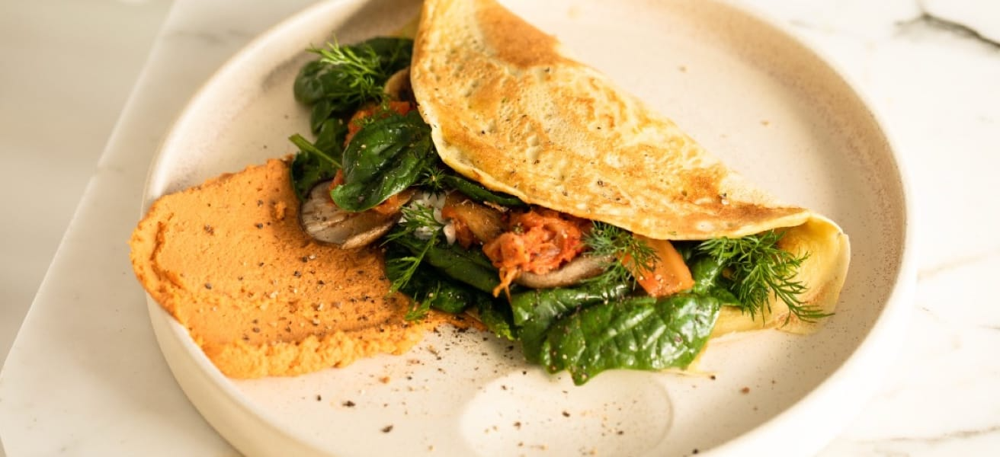

home
Simple Omelette Recipe
An easy and quick dish, perfect for any meal. This classic omelette combines beaten eggs cooked
to perfection, optionally filled with your choice of cheese, vegetables, or meats.
double_arrow
Preparation time
- Total: Approximately 10 minutes
- Preparation: 5 minutes
- Cooking: 5 minutes
Ingredients
- 2-3 large eggs
- Salt, to taste
- Pepper, to taste
- 1 tablespoon of butter or oil
- Optional fillings: cheese, diced vegetables, cooked meats, herbs
Instructions
- Beat the eggs: In a bowl, beat the eggs with a pinch of salt and pepper until they are
well mixed.
You can add a tablespoon of water or milk for a fluffier texture.
- Heat the pan: Place a non-stick frying pan over medium heat and add butter or oil.
- Cook the omelette: Once the butter is melted and bubbling, pour in the eggs. Tilt the pan
to ensure
the eggs evenly coat the surface.
- Add fillings (optional): When the eggs begin to set at the edges but are still slightly
runny in the
middle, sprinkle your chosen fillings over one half of the omelette.
- Fold and serve: As the omelette continues to cook, carefully lift one edge and fold it
over the
fillings. Let it cook for another minute, then slide it onto a plate.
- Enjoy: Serve hot, with additional salt and pepper if needed.
Nutrition
The table below shows nutritional values per serving without the additional fillings.
| Calories |
277kcal |
| Carbs |
0g |
| Protein |
20g |
| Fat |
22g |